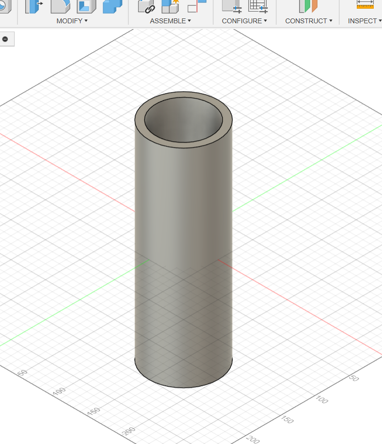
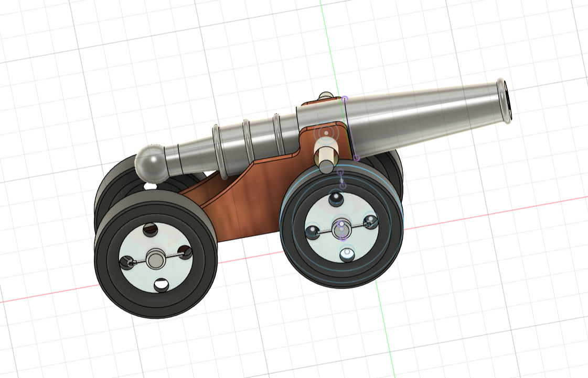

Computer Aided Designing (CAD)
In this module, I explored Autodesk Fusion 360, one of the most powerful CAD tools. Over 7 days, I learned to create sketches, build 3D models, assemble parts, and render my final project: a Canon design.
Day 1 – Introduction to CAD & Fusion 360
Learned what Computer-Aided Design (CAD) means and how it enables engineers to design products digitally. Explored Fusion 360’s interface including the toolbar, browser, and timeline. Understood parametric design, where models are driven by editable parameters.
Day 2 – Sketching & Constraints
Focused on 2D sketches, which form the foundation of 3D models. Practiced with geometric constraints (parallel, concentric, tangent) and dimensional constraints (length, angles). Learned that constraints make models editable and robust.

Day 3 – 3D Features & Tools
Practiced turning sketches into 3D models using features like extrude, revolve, sweep, and loft. Learned the importance of Fusion’s timeline, which records each step and allows for easy edits.
Day 4 – Assemblies & Joints
Learned the difference between bodies and components. Practiced assembling parts with joints such as rigid, revolute, and slider. This step was crucial for building mechanisms like my final canon project.
Day 5 – Rendering & Materials
Applied realistic materials like metal and wood to my models. Used Fusion’s rendering workspace to create presentation-ready images with lighting and shadows.
Day 6 – Simulation (Bonus)
Explored simulation features like stress analysis and motion testing. Learned how Fusion can validate designs under load, ensuring functionality before manufacturing.
Day 7 – Final Project: Canon Design
As my final project, I designed a canon in Fusion 360. The model included a barrel, base, and wheels, assembled with joints to simulate real movement. Added materials for realism and rendered the final design.
Learning Outcomes
- Gained confidence in using Fusion 360 for sketches, 3D modeling, assemblies, and rendering.
- Learned best practices like parametric design and clean timeline management.
- Connected CAD skills with real-world fabrication like 3D printing and CNC machining.
- Completed a final canon project showcasing my CAD learning journey.